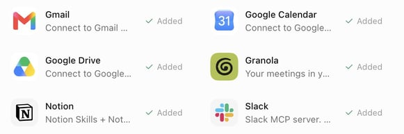
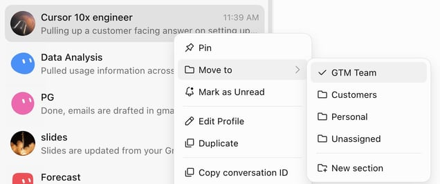

Official guides · 9/27
Grok Bot for GTM
How I use Grok Bot (xAI's AI assistant that comes with its own computer) for Enterprise GTM at SpaceXSI: a Chief of Staff, prospecting and account prompts, live slides, and the rest of the team.
This is how I use Grok Bot for Enterprise GTM at SpaceXSI.
When we were initially dogfooding this product internally, Grok Bot rapidly gained adoption throughout the company, and I created an internal Notion (a notes and database app) doc on how I use Grok Bot to share with my team. I wanted to share it externally if it's helpful for other GTM orgs setting up Grok Bot.
Grok Bot feels different for me as it's not just a thinking partner, but I can trust it to go off and actually do things end-to-end. Every week it learns more about how I work, and gets sharper.
Tips for getting started
Make sure Grok Bot is connected to what you leverage daily, ie: Salesforce, Gmail, Calendar, Sheets, Drive, Slack (a work chat app), Notion, Granola for meeting notes, Figma for slides, X, LinkedIn, your data warehouse and more.

Grok Bot has its own computerBot has its own computer that runs 24/7 so you can accomplish tasks while your laptop is shut.
Your bots have memory so will remember your preferences, and will learn your writing style. Ask bot to scan your gmail and slack for how you write.
One of my favorite ways to use bot is through the mobile app, and voice input so I can give bot tasks when I'm not at my computer. This makes putting together slides or pulling information from tools really convenient when I don't have access to my laptop.
Run your own team of bots
Chief of staff
My Chief of Staff owns meeting prep, inbox and post-call drafts, orchestrates the rest of the team. You can tell your chief of staff to spin up other agents, and organize your bots in sections. I like to pin my Chief of Staff as I use this bot most frequently.
Daily meeting prep
Tell your bot to create a routine to prep you for meetings for the day and pull from your tools (Salesforce, Gmail, Slack, Granola, Gong, or online research if it's a new meeting). I prefer a short, skimmable output that I can read on my phone as I'm commuting to work. You can also have your bot create customized decks ahead of your calls for the day (it calls my slides bot).

Daily meeting prepProspecting bot
Builds pipeline gen plans, pulls intent data, does deep research (will watch webinars, listen to podcasts, find blog posts, scan LinkedIn/X for relevant posts). Customizes messaging based on company priorities and personal hooks, drafts in gmail, and puts together messaging in your voice. I like to run this overnight to have it ready in the morning.
Customer expert
One agent per strategic account (works for top prospects too). It watches the relevant Slack channels, digests calls, emails, and Slack threads, and runs a weekly media rundown on the account (relevant exec posts on X / LinkedIn, watches webinars, finds podcasts and blog posts). It also flags feature requests from calls, updates me on support tickets, and finds relevant new features for the customer.
Weekly media rundown:
Weekly media rundown for [account]. Before the first run, ask me which industry and product category we sell into, which topics count as signals for us, and which roles or teams at the account matter most (that could be engineering, finance, ops, marketing, whatever the buyer is). Save the answers and use them on every run.
Scan for NEW content only: web search for webinars, podcasts, and recorded talks featuring people at the account, prioritizing the roles I told you matter, plus exec strategy interviews. Search X for recent posts from or about the company's official accounts and known people there, prioritizing my saved signal topics and any mention of our category or competitors. Keep a state file of everything already covered and compare against it so you only report genuinely new items.
For each new item, actually consume the content. Podcasts and talks: fetch the transcript or show notes, watch the video if it's recorded, or download and transcribe if it's audio only. Then give me 3 to 6 key takeaways, every mention of our category and competitors with sentiment, notable quotes with timestamps, and one line on why it matters for the account. For X posts: author, date, the text, a link, and why it matters. Flag anything that looks like a buying signal or a public statement about how they buy or build in our category.
Send one weekly roundup. If nothing new, send a single line saying so. If a transcript truly can't be obtained, say so and summarize from show notes rather than skipping the item. Update the state file after every run.
Data analysis agent
I connect this to the relevant tools to track usage data across my book.
Product expert
I call this one "10x engineer." An agent connected to the codebase for questions deeper than my product knowledge. When a customer asks something technical live on a call, I ask this agent and get a customer-facing answer back, and don't need to ask an engineer or dig through Slack, Notion, docs, etc. If you don't have repo access, an internal knowledge tool like Glean works as the source instead.
1:1 agent
Preps my weekly manager sync. I Granola our meetings so I can hand off tasks my manager and I discussed from our 1:1s and set up reminders.
Forecasting bot
Pulls from Granola, Gong, Slack, and email, and auto updates Salesforce opportunity notes. I give it the format I want the updates in, and this helps me streamline forecast calls and ensure my notes are constantly up to date.
Slides
My slides bot owns customer decks in Figma using our brand system and a master deck it maintains. It makes copies to customize per customer and even translates decks into other languages. Give the bot your design guidelines up front.
My favorite skill is to auto-update slides while I'm on a customer call, based on the Granola transcript. Stop the Granola recording 5 or 10 minutes before the call ends and run it live, so you wrap up the call with a slide built from what the customer just told you during Discovery, or use it as a follow-up or opener for the next call.
Sales Coach
Have your bot watch your external calls on Gong, and give you feedback on what you could improve or what went well.
Helpful tips/skills
- Onboard Grok Bot like a new teammate. The first time we do a task together, I ask the agent to record, take over the computer and demonstrate, then have it turn the recording into a skill. ie: I showed my bot how I like to research stakeholders on X.
- Feed it your writing. Have it scan your sent mail and build a style profile before it drafts anything. Give your bot a few examples of outreach you're proud of.
- Give your bot feedback and make rules for output you don't like. I create skills (ie: I have an anti-slop skill) and rules that I continuously edit over time, and every time I steer my agent I have it add to my skill.
- Your bot can parallelize work, tell your bot to spin up multiple cloud agents for parallel tasks, and create a skill for this.
- Ask your Chief of Staff to take a look at all your bots/tasks and if there's anything you can further automate, parallelize, or better organize. You can also ask for it to clean up unnecessary routines.
- You can put bots in a group chat to work on a task, and your bots can call your other specialized agents. (ie: to create slides my Chief of Staff bot often calls my slides bot).
Every week I iterate on how I use Grok Bot, it's the first AI tool that feels like a trusted colleague, and I don't need to constantly rewrite output or babysit the agent. Most of my time during the day is on calls, so I used to have to spend hours of the day in the evening catching up on admin work. Now I can pass much of that work to my bots and spend more time in front of customers.
You can try Grok Bot here and let me know your feedback!
Written by Krista Letz